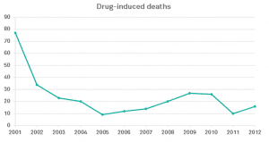

< < < Back
Kratom To Be Banned In The United States – Return Of Kings
The Prohibition wing of the U.S. government, the Drug Enforcement Administration, is about to ban the pain-relieving dietary supplement kratom. Think of it as the government mafia eliminating competition for its client, the medical-pharmaceutical complex. After all, as wrong as Bill Maher is most of the time, even a stopped watch is right twice a day. He knocked it out of the park when he said this:
Fifteen years ago, cancer drugs cost an average of $10,000 a year. Now it’s $10,000 a month because this [Big Pharma] cartel owns the U.S. government every bit as much as Mexican drug lords own theirs.
Make no mistake, drug company lobbyists use your elected politicians as their employees. Big Pharma wants the sheeple buying its drugs. Kratom is a cheap and effective herbal supplement native to Asia that users say does everything from alleviating pain to helping with opioid addiction to providing an energy boost. The Libertarian Republic grasped that concept when it wrote about the coming ban on kratom.
The real losers when the FDA went after kratom were the ultimate consumers: people who are in pain and looking for an inexpensive, natural and effective remedy.

Big Pharma wants the money you’ve been spending on kratom
The DEA will classify this supplement as a Schedule I drug, the same schedule on which such drugs as heroin, LSD, ecstasy, and yes, that deadly marijuana are listed. As usual, the “it’s for your own good” and “public safety” and “Big Daddy Government knows best” PR lines were pushed. Oliver Grundman, a pharmacologist at the University of Florida couldn’t decide if he wanted the government to continue to micromanage people’s lives or if he was remiss about yet another drug being added to the taboo list.
There needs to be some oversight as to what kind of products are being sold in the interest of consumer safety, not necessarily saying that everything related to the plant should be put in Schedule 1. We have seen the damage that that can do to a drug with promising pharmacological properties… For me it’s a death sentence. Once you put a plant and its ingredients into DEA Schedule 1, it’s very hard to do research on it, and it will become very hard to move forward with any positive developments because there is such a stigma associated.
Physicians claimed they’re worried that users of the drug will use it as an opioid replacement without seeking professional help. Let’s translate that: They want to sell you their drugs and bill you for their services rather than letting a much cheaper alternative do the same thing.
Failed Drug War
Armed thugs have done little to cut illicit drug use since the 1970s
Importantly, as revealed in the documentary American Addict, the drug war in America is only pushing drug users away from street drugs and towards getting prescription narcotics from pill pushing prostitutes with medical degrees. It’s simple economics. Think of drug-seeking behavior as a balloon that has not changed in size. When the balloon is squeezed on one side, the demand shifts to the other side.
America has only 5% of the world’s population, yet consumes 80% of its prescription narcotics. The overall percentage of the population using drugs regularly never changes, no matter how Draconian police and punishments become. Drug users only shift suppliers. When the DEA cracks down on substances like kratom, it shifts the money away from small, herbal supplement producers and into the hands of Big Pharma.
The issue—the psychology of addicts and a culture that causes drug-seeking behavior—is never addressed. On purpose. You have to create problems to create profit, you know.
The U.S. government spends $51 billion a year on the drug war in a system that favors punishment and jail time over treatment and support. Nearly 1 in 100 people are behind bars in the U.S. and most of those that are incarcerated are there on drug charges. This means the U.S. has the highest per capita incarceration rate in the entire world. And now, people will be going to prison for yet another drug, kratom.

Deaths from illicit drugs plummeted after Portugal decriminalized all drugs
Gabriel Sayegh of the Drug Policy Alliance lays out the insanity of the Nixon-era prohibition the DEA represents.
We’re turning to the criminal justice system to solve problems that are ultimately about health and well-being. We’re using entirely the wrong tools to address a very substantial and very real problem.
Even Big Daddy Government admits rates of illicit drug use have remained the same or even gone up slightly.
Illicit drug use in the United States has been increasing. In 2013, an estimated 24.6 million Americans aged 12 or older—9.4 percent of the population—had used an illicit drug in the past month. This number is up from 8.3 percent in 2002.
What if the DEA stopped terrorizing people and allowed them to do what they want with their bodies? (Ironic the my body, my choice gnome works when a women wants to kill an unborn child but not when someone wants to take kratom to alleviate pain). Portugal did just that, it decriminalized all drugs back in 2001. The results? Drug use is down, drug deaths are way down, and people are getting the help they need from medical professionals rather than being thrown into jail and slapped with a life-altering criminal record.
Other than threatening the future of ROK because of our connection to powerful kratom interests (just kidding, sort of) the kratom ban is yet more evidence that we are nothing but human cattle on the corporate-government tax farm. Can’t have the cattle doing anything else but producing profit for the establishment. Surely we can’t let them medicate themselves with an herbal supplement.
Read More: 3 Supplements That Will Make Your Smarter